ペア学習
第6時 立体を、正面と真上から見た図で表そう
1人1問ずつ、言葉の意味を、自分の言葉で言う。前の時間は、線や面を動かして、立体をつくった。
回転体
回転の軸
母線
垂直な方向に動かす
空間図形 第6時 立体を、正面と真上から見た図で表そう
めあて
第6時 立体を、正面と真上から見た図で表そう
学習課題
円柱と円錐を、
正面から見た形と、真上から見た形で、
それぞれ右の枠にかいて表そう。
【気づき】見る向きによって、
立体の見え方は、どうちがうか。
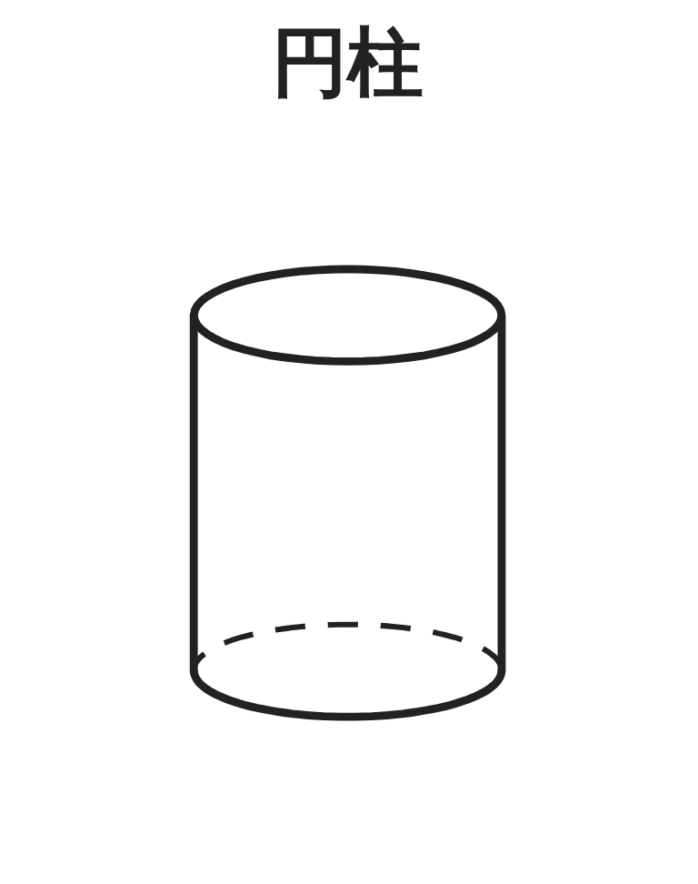
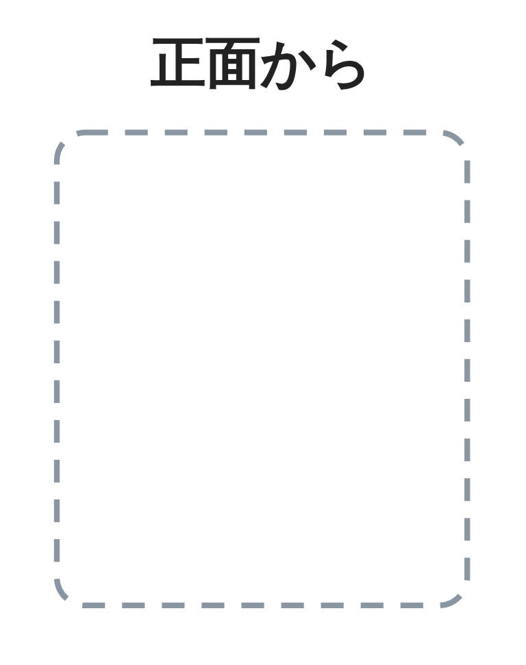
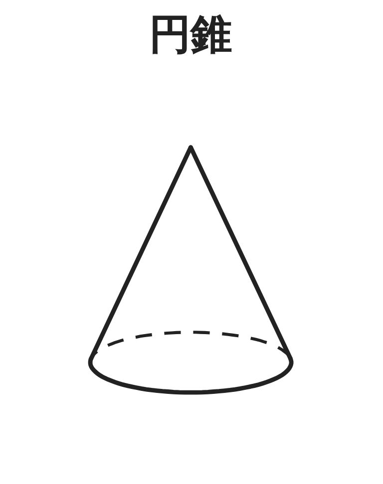
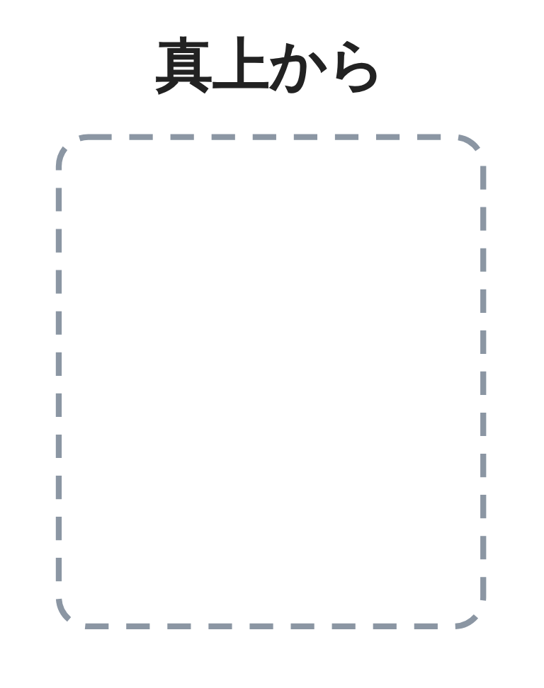
空間図形 第6時 立体を、正面と真上から見た図で表そう
学習課題のまとめ
第6時 立体を、正面と真上から見た図で表そう
【気づき】見る向きによって、
立体の見え方は、どうちがうか。
見る向きによって、見える形がちがう。
正面と真上の2つの図を組にすると、
立体の形がわかる。
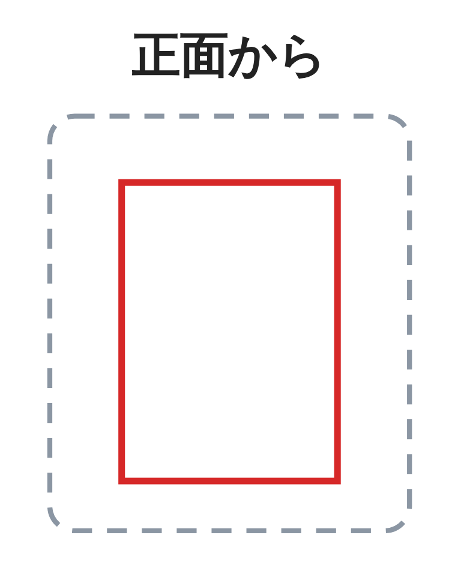
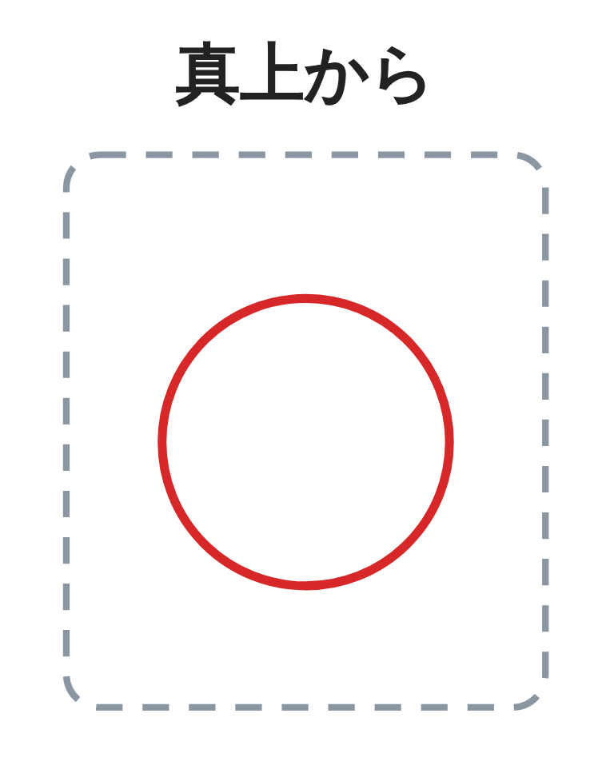
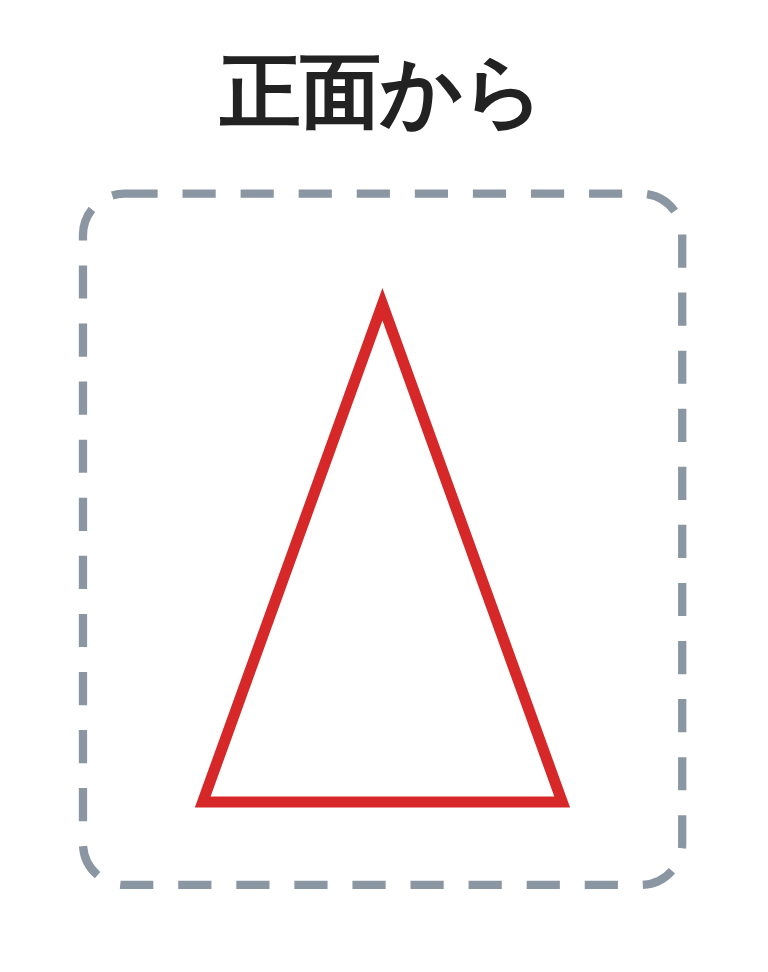
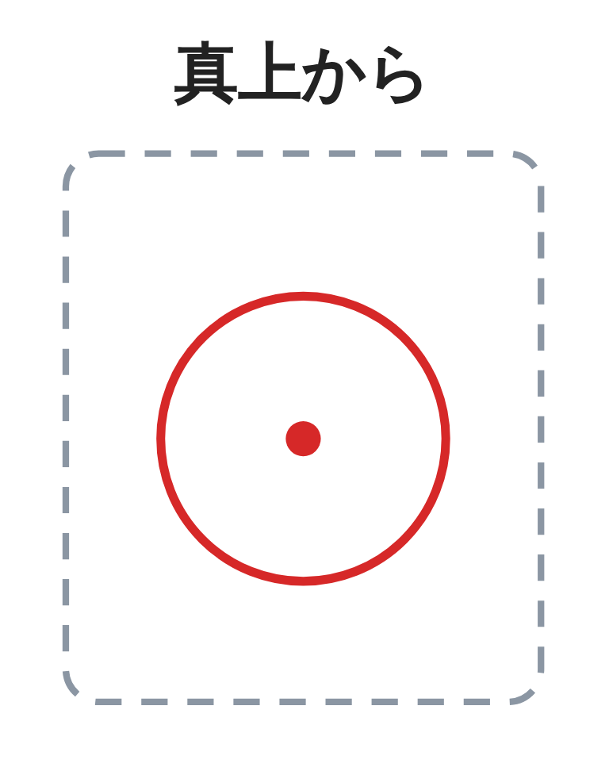
空間図形 第6時 立体を、正面と真上から見た図で表そう
ことば
第6時 立体を、正面と真上から見た図で表そう
立体を正面から見た図を 、
真上から見た図を という。
立面図と平面図を組にして表した図を という。
投影図で、見えない線は でかく。
投影図では、立面図と平面図の をそろえてかく。
空間図形 第6時 立体を、正面と真上から見た図で表そう
ことば
第6時 立体を、正面と真上から見た図で表そう
立体を正面から見た図を立面図、
真上から見た図を平面図という。
立面図と平面図を組にして表した図を投影図という。
投影図で、見えない線は点線でかく。
投影図では、立面図と平面図の横の幅をそろえてかく。
空間図形 第6時 立体を、正面と真上から見た図で表そう
例題
第6時 立体を、正面と真上から見た図で表そう
次の投影図は、
どんな立体を表しているか。
（上が立面図、下が平面図）
ア〜エ の立体の名前と、
底面の形を答えよう。
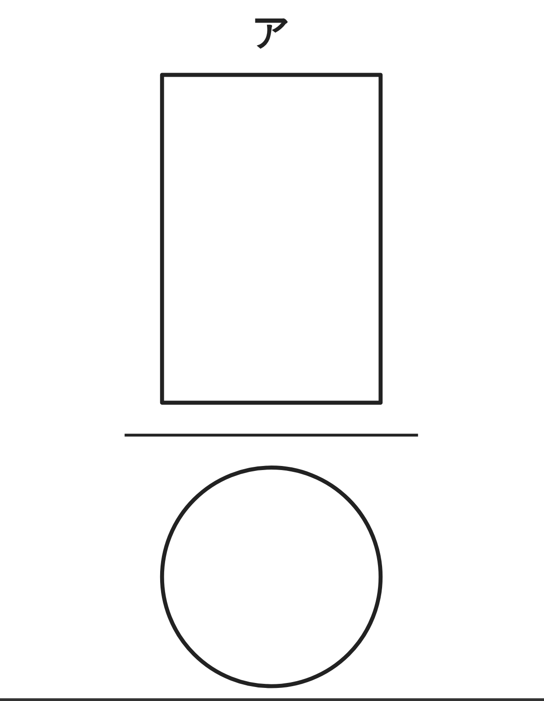
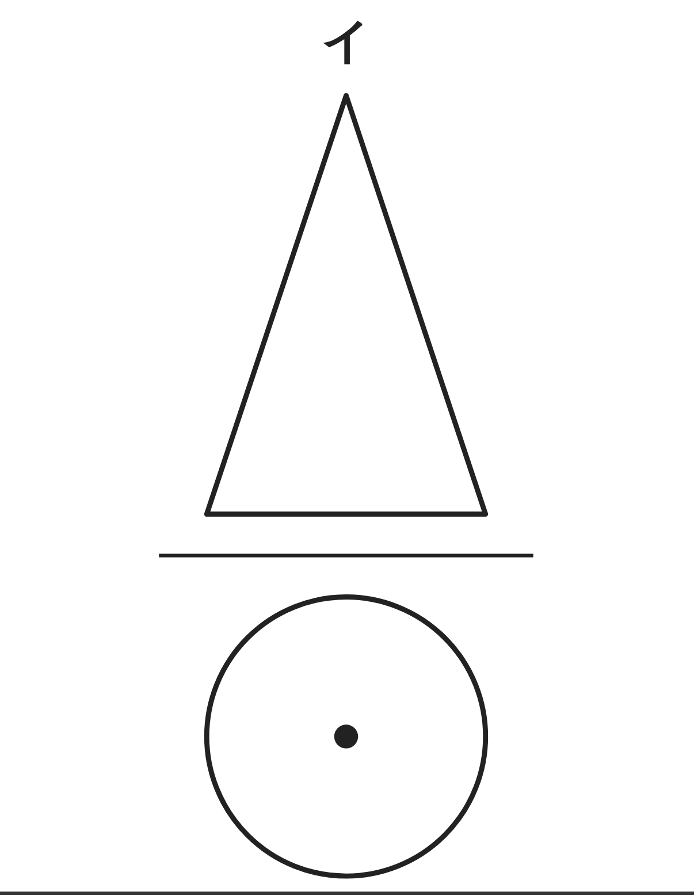
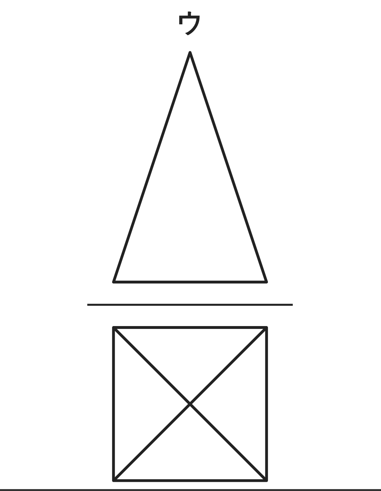
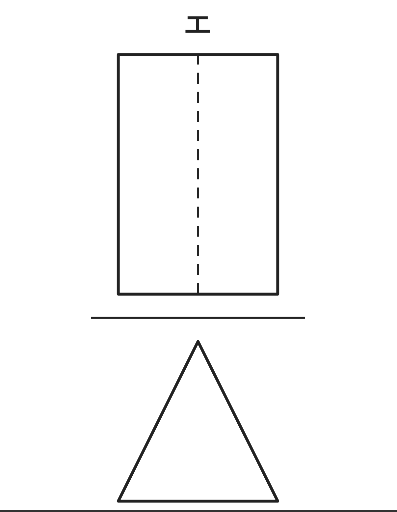
| ア | イ | ウ | エ | |
|---|---|---|---|---|
| 立体の名前 | ||||
| 底面の形 |
【判断のしかた】立てて置いた立体は、立面図と平面図の、何を見ればよいか。
空間図形 第6時 立体を、正面と真上から見た図で表そう
例題 解答
第6時 立体を、正面と真上から見た図で表そう
判断のしかた
立面図が長方形なら柱、
三角形なら錐
平面図は、底面の形
見えない辺は、点線
| ア | イ | ウ | エ | |
|---|---|---|---|---|
| 立体の名前 | 円柱 | 円錐 | 正四角錐 | 三角柱 |
| 底面の形 | 円 | 円 | 正方形 | 三角形 |
空間図形 第6時 立体を、正面と真上から見た図で表そう
考えよう
第6時 立体を、正面と真上から見た図で表そう
①
図のようになる立体を、2つ見つけよう。見取図と置き方を、右の枠にかこう。
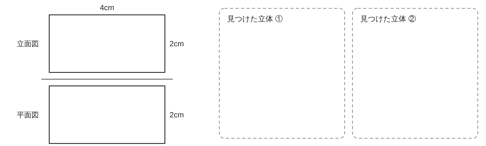
②
見つけた立体の投影図が、図と同じになるのは、なぜか。理由を説明しよう。
③
立面図と平面図だけでは、立体が1つに決まらないことはあるだろうか。
あるとき、どうすればよいだろう。
空間図形 第6時 立体を、正面と真上から見た図で表そう
振り返り
第6時 立体を、正面と真上から見た図で表そう
今日のめあて
立面図
平面図
投影図
点線
今日わかったことを、ペアで1つずつ言い合おう。
ワークシートと演習プリントを出そう。（未完成でも出す）
空間図形 第6時 立体を、正面と真上から見た図で表そう